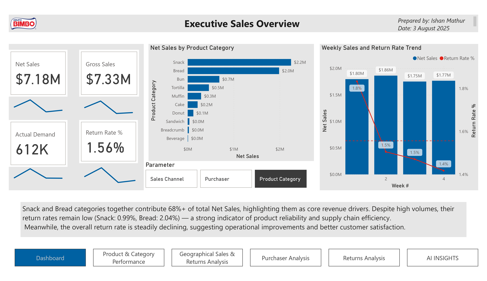

Retail Sales & Returns Analysis — Power BI
Executive KPIs, category trends, geographic risk, purchaser analysis, and AI insights.
- Net Sales: $7.18M
- Return Rate: 1.56% (below 2% target)
- Top Revenue Drivers: Snack & Bread (>68% of sales)
- Geographic Hotspot: Mexicali Plaza return rate 5.73%
- Category Risk: Bread return rate 3.55%
- High-Impact Purchaser: Walmart San Pedro ~26% of returns
Interactive Preview
*Data shown is safe-to-share. If the iframe does not load, use the “Live Dashboard” button above.*
Dashboard Screens


Approach & Stack
Built end-to-end in Power BI with Power Query for cleaning, star schema modeling, DAX measures for KPIs/benchmarks, map visuals for geography, Decomposition Tree for root cause, and Key Influencers for drivers. Focused on actionable supply-chain levers (delivery cadence, freshness checks, purchaser return terms).
Recommendations
- Optimize logistics to Mexicali Plaza (shorten delivery cycle, freshness QA).
- Investigate Bread category returns (packaging, shelf-life, handling).
- Renegotiate/monitor high-return purchasers (e.g., Walmart San Pedro) with targeted SLAs.